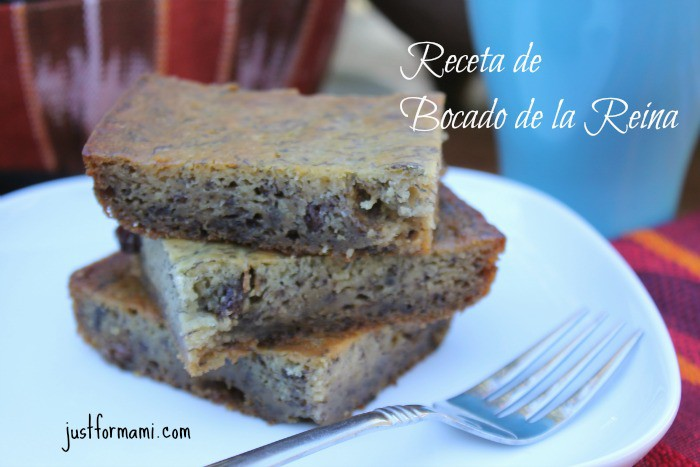
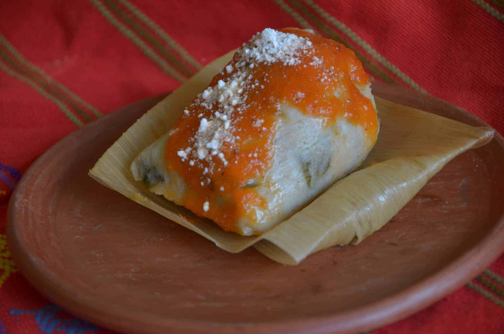

Ingredientes: 8 panes dulces 8 panes desabridos (pan francés) 4 huevos (yemas separadas) 1 onza de ron 2 tazas de leche 1 cucharadita de vainilla 3 cucharaditas de margarina derretida 1/4 de taza de jugo de naranja 1 cucharadita de ralladura de naranja 1 cucharada de polvo de hornear 1/2 cucharadita de canela en polvo 1 paquetito de pasas 1 cucharadita de harina Prodedimiento: Desmenuza todo el pan y ponlo a remojar en la leche por al menos 30 minutos. Machácalo y agrega las yemas de los huevos una por una mientras revuelves.Agrega el resto de los ingredientes con excepción de las claras de huevo y las pasas.En un plato hondo bate las claras a punto de nieve y viértelas sobre la mezcla sin dejar de revolver.En un platito coloca las pasas y la cucharada de harina, revuelve para que se cubran y agrégalo a la mezcla.Viértelo en un molde engrasado con mantequilla y hornéa por 30 minutos a 350 grados. Déjalo enfriar tu bocado de la reina y sírvelo con azúcar y canela encima acompañado de un buen café. Buen provecho. 
Ingredientes: 36 tomates y 2 cebollas grandes 4 chiles pimientos rojos y 4 dientes de ajo 1 chile guaque y 1 chile pasa 1 cucharada de pepitoria 1 cucharada de ajonjolí 1 rajita de canela 1 rama de perejil y sal y pimienta al gusto 36 pedazos de pechuga de pollo cortados en cuadros de 2 pulgadas 36 bolitas de masa de 2 onzas 72 hojas de tusa muy bien lavadas y limpias 36 tiritas de tusa para amarrar los chuchitos Preparacion: Asa todos los ingredientes menos la raja de canela y la ramita de perejil. Licua y cuela. Coloca la salsa en una olla, agrega el perejil y la canela y hierve muy bien, sazona con sal y pimienta. Esta salsa debe quedar espesa.Lava muy bien el pollo y sécalo con toallas de papel absorbente. Con cada bolita de masa prepara una tortilla no muy delgada, de aproximadamente 3 pulgadas de diámetro. Puedes usar una bolsa plástica y formarla con un plato plano o con una máquina de hacer tortillas.Coloca la tortilla dentro de una tusa y cuidadosamente vierte 2 cucharadas de salsa y un pedacito de pollo dentro de cada una. Cierra la tortilla, coloca la otra tusa y dobla la tusa para formar el chuchito. Amárralo con la tirita de tusa.Coloca los chuchitos dentro de una olla, agrega 2 litros de agua. Tapa los chuchitos con un plástico y luego con la tapadera de la olla. Cocina los chuchitos por 2 horas. A la hora de servir, acompaña con salsa de tomate hecha en casa y queso seco, o de Zacapa. 